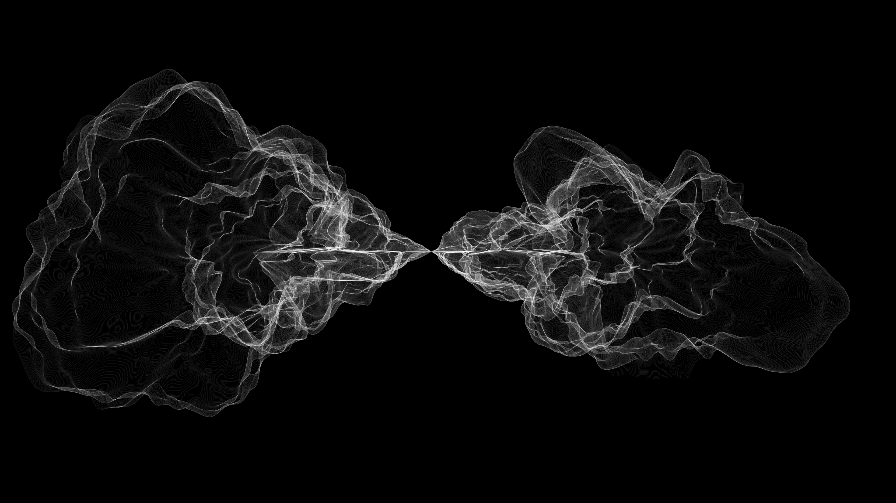
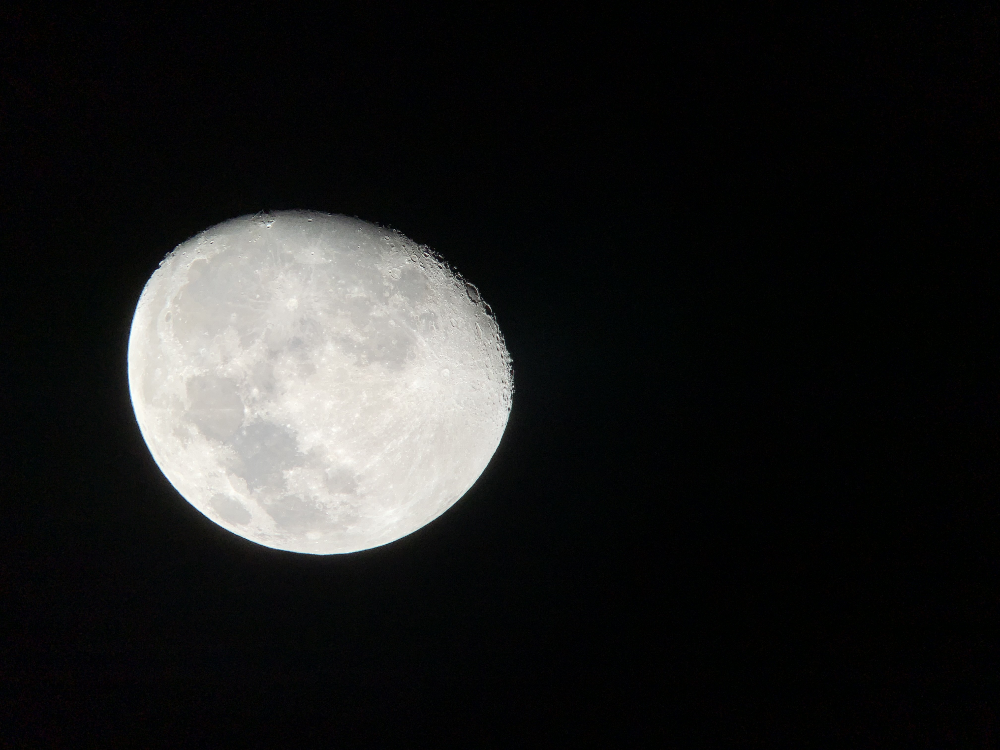
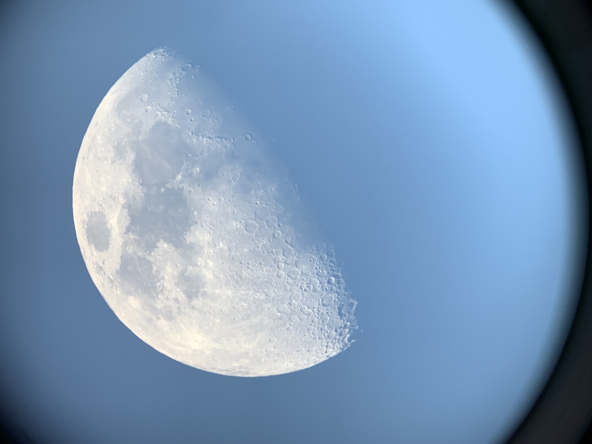
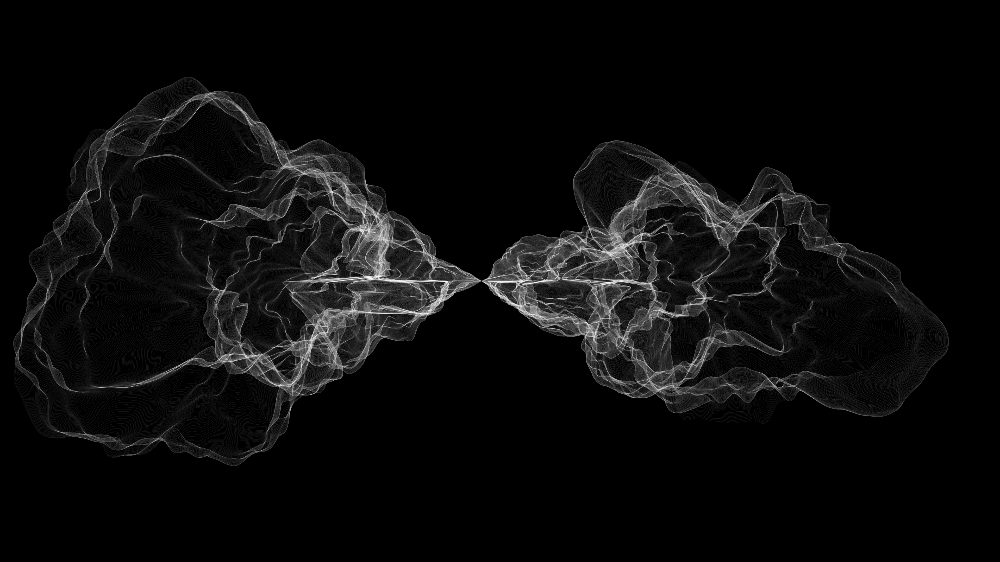
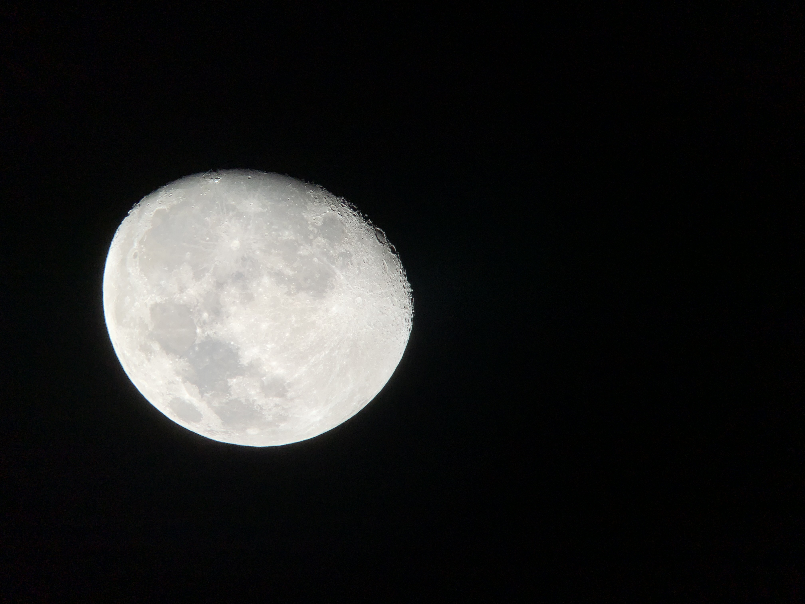
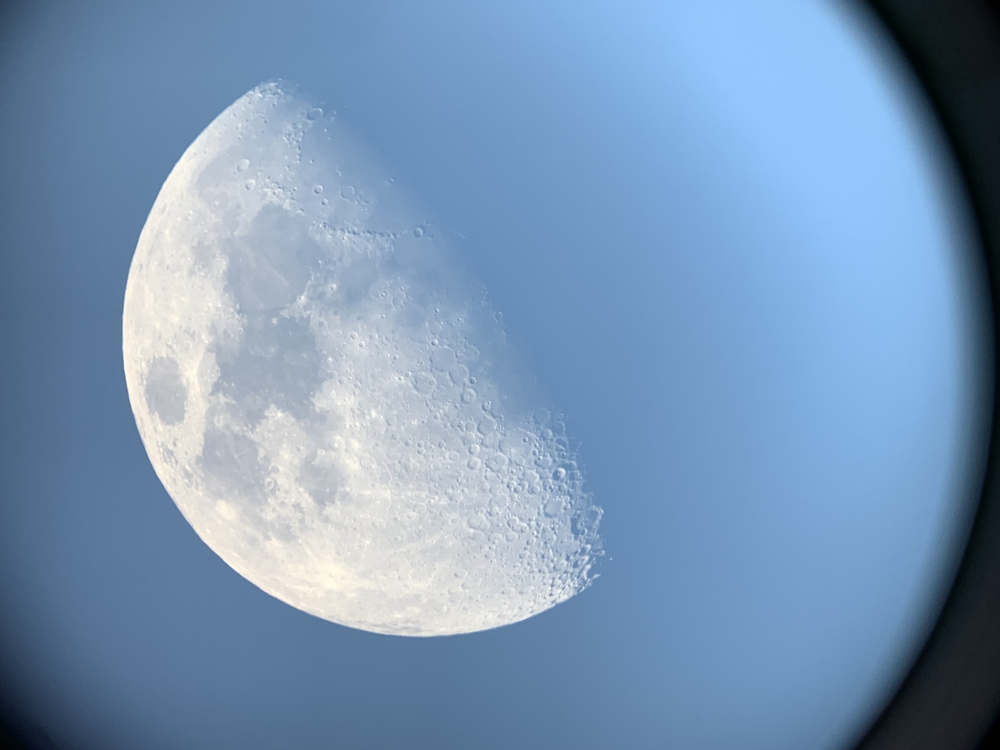

Hello :)
Thanks for visiting my About page. I was born in Switzerland but grew up in the Northeast where I started rowing in highschool and it became my passion. The valuable lessons I have learned from rowing have helped me to succeed in my endeavours both in and outside of the classroom.


 




